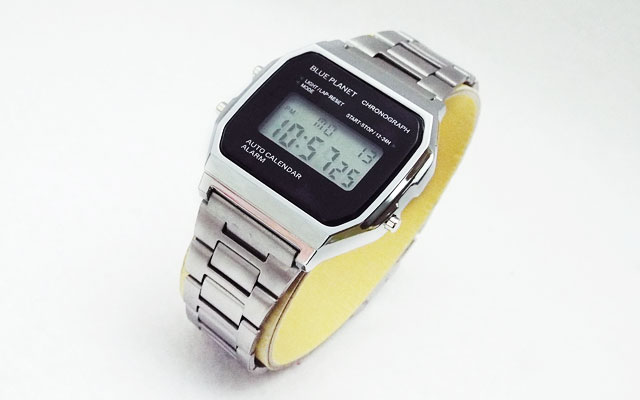
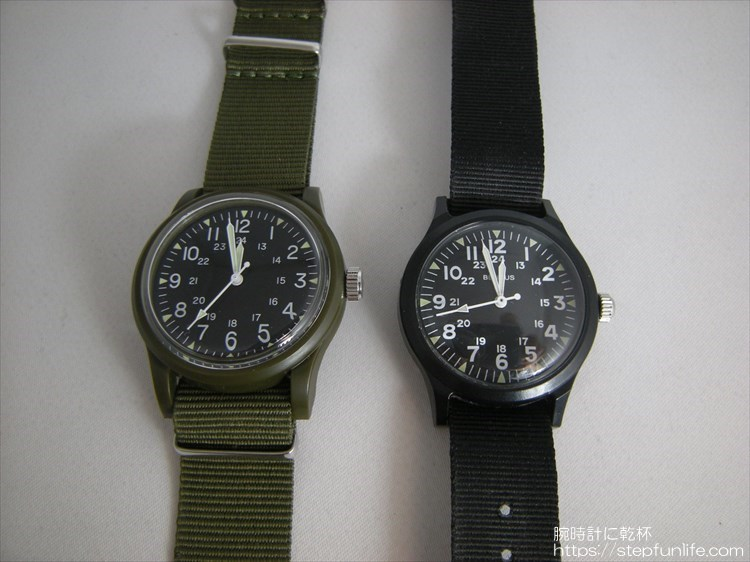
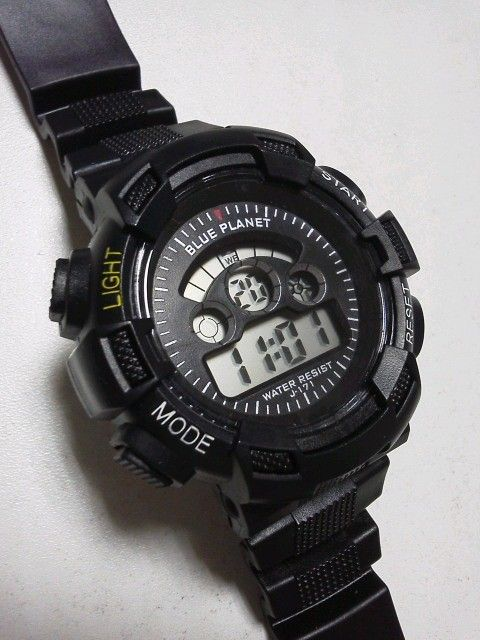
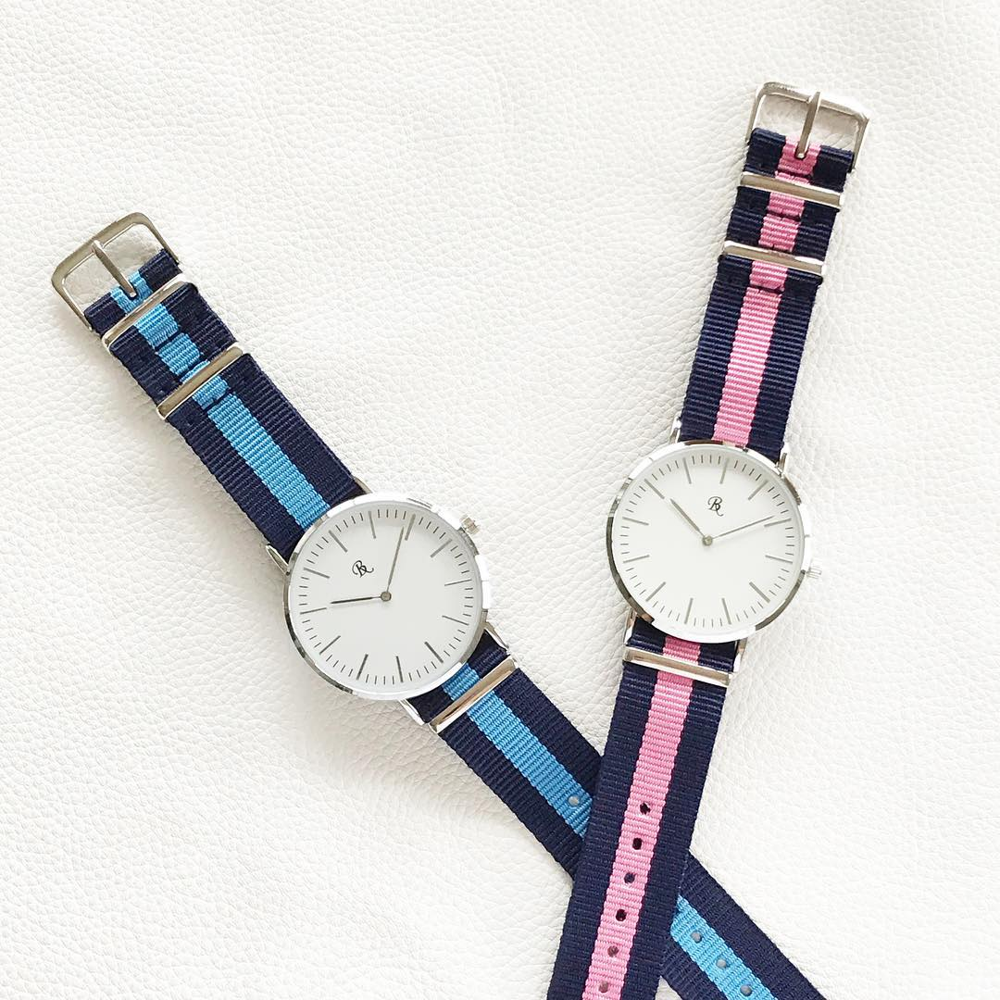

Q1.時計は時間を知る物ためだけの物である
Q2.誕生日は祝われるより祝う方が好き
Q3.他人に自分の時計を自慢したい
Q4.何事もメモはこまめにとる方である
Q5.安ければ多少造形には目をつむる

カシオのG-SHOCKと全く似た見た目をしています。機能面ではカシオに劣りますが、生活防水やライトアップ機能やストップウォッチ機能まであります。元々この時計のモデルが過去爆発的人気誇ったチープカシオと呼ばれる、カシオの格安時計であるが故に人気が出たようなものです・・・
女性や男性にはカシオデジタル時計風のレトロなデザインがとても可愛くて人気があります。

ベトナム戦争モデル（ GG-W-113 ）なんて呼ばれているベトナム戦争の際にアメリカ軍に支給された「ベンラス」モデルにそっくりな時計です。起源である「ベンラス」は定価10,000円ですが、このダイソーミリウォッチは500円ととても安いです。元々「ベンラス」は戦争当時使い捨て感覚で量産されていたので、もしあなたがちょっとしたミリタリーファッション気分を味わうのなら、ダイソーミリウォッチで十分かもしれません。

恐らくDAISO最強腕時計。ある人がブログで検証を書いていたので、内容を参考程度に紹介します。
１．激しい水道流水に思いっきりまんべんなくさらす。
２．つけたまま風呂に入り、水中引き回しの刑に処す。
３．２メートルの高さから浴槽にフリーフォール。
４．２メートルの高さから床にフリーフォール。
５．３メートル離れたカミさんにオーバースローでパス。
６．床に置いて気付かない振りして軽く蹴って『あ、ゴメン』と言う。
こんなことしても壊れませんでした。おすすめです。

一見あなたは「あぁ、500円時計だなぁ～」と思うかもしれませんが、実はこういったタイプの時計はバンドを変えたりするだけで結構化けたりします。この時計を正面から良く見て、文字盤のデザインが良いことに気づくでしょうか？
そうです。この時計はかの「ダニエルウェリントン」の時計にそっくりです(結構有名)。そこでバンドさせ交換すれば「本場のダニエルウェリントン風」になります。もちろん、そのまま使ってもいいと思いますが・・・